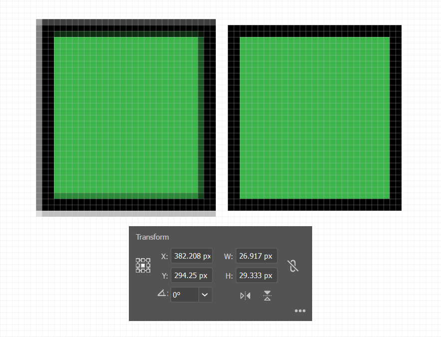

مروری بر SVG
مزیتها، شیوهی درست استفاده،
دریافت خروجی مناسب و متحرک سازی
اسلایدها از این آدرس در دسترس است 👌
skillvid.com/slides/reactconf98
مزیتهای استفاده از SVG
- قابلیت scale کردن بدون افت کیفیت
- ویرایش آسان به خاطر فرمت متنی
- کوچک بودن سایز فایل
- قابلیت متحرک سازی با CSS و JS
قابلیت scale کردن بدون افت کیفیت
ویرایش آسان به خاطر فرمت متنی
کوچک بودن سایز فایل
تصویر PNG با حجم ۶.۳ کیلوبایت
تصویر SVG با حجم ۱.۷ کیلوبایت
قابلیت متحرک سازی با CSS و JS
https://codepen.io/amir-abbas/full/XBMdBjشیوه درست استفاده از SVG در صفحات وب
- استفاده از تگ img
- استفاده در CSS با کمک دستور background-image
- استفاده از iframe
- استفاده از embed
- استفاده از تگ object
- استفاده به شکل inline
.logo {
background: url(images/svgicon.svg) center;
background-size: 128px 128px;
}
نکته: در صورتی که SVG را به شکل background-image در CSS استفاده کردید
حتما باید از background-size هم استفاده کنید.
واقعا بعید به نظر میرسد کسی از این شیوه استفاده کند ولی به هر حال
¯/_(ツ)_\¯
تگ embed استاندارد و پذیرفته W3C نیست. پس ترجیحا از این متد استفاده نکنید ;)
کدومش روش بهتریه؟
| قابلیت ها | object | inline | img | background-image |
|---|---|---|---|---|
| دسترسی از طریق CSS | دارد | دارد | به شکل خاص | به شکل خاص |
| دسترسی از طریق JS | دارد | دارد | ندارد | ندارد |
| استفاده از SVG Animation | دارد | دارد | دارد | دارد |
| Interactive Animation | دارد | دارد | ندارد | ندارد |
منظور از «به شکل خاص» حالتی است که دستورات CSS داخل خود فایل SVG قرار گرفته باشند.
در اینجا انیمیشن ما داخل خود فایل SVG قرار گرفته است
نکته
تغییر رنگ آیکون های SVG که به شکل img در صفحه استفاده شده باشند با استفاده از ترفندهایی امکانپذیر است. برای اطلاعات بیشتر میتوانید این ویدیو را ببینید:
https://www.youtube.com/embed/M2IDKozS9lI
نکته
استفاده از SMIL (بخوانید اسمایل) پیشنهاد نمیشود
SMIL is Deadراههایی برای بهینه سازی SVG
- نام گذاری لایه های در Illustrator
- ساده کردن path ها با استفاده از ابزار Simplify یا پلاگین VectorScribe
- استفاده از قابلیت make pixel perfect
- تبدیل shape ها به compound path در ایلستریتر
- حذف تگهای اضافه با SVGO
- gzip کردن فایل های SVG روی سرور
حواسم بهت هست!
نامگذاری لایه ها توسط طراح، کار را برای شما آسان تر میکند :)

استفاده از فرمت vector لزوما تضمین نمیکند که تصاویر شما شارپ باشد

با استفاده از این ابزار به راحتی میتوانید فایل SVG خود را تمیز کنید. اگر میخواهید از ابزار آفلاین استفاده کنید میتوانید از این پلاگین استفاده کنید:
https://github.com/svg/svgo
شیوههای متحرک سازی SVG
- متحرکسازی ساده با استفاده از CSS Transition و Transform
- تکنیک line Animation
- تکنیک Morph
خصوصیات CSS مخصوص SVG
https://css-tricks.com/svg-properties-and-css/
https://www.w3.org/TR/SVG11/styling.html
متحرکسازی ساده با استفاده از CSS Transition و Transform
https://codepen.io/amir-abbas/full/wvwdJWgنکته ها
- همه حرکت ها باید داخل محدوده viewbox اتفاق بیافتد در غیر این صورت دیده نمیشود
- مرورگرهای قدیمی تر با transform-origin بر روی المنت های SVG مشکل دارند
- برای حل این مشکل transform-origin را به شکل پیکسلی بدهید
- از پلاگینهای JS مناسب برای اینکار استفاده کنید:
پلاگین GreenSock
مقاله مربوط به این مشکل
دموی تصویری مشکل - از تکه کد جاواسکریپت ارائه شده در این صفحه استفاده کنید: https://codepen.io/EntropyReversed/pen/ZVPKoq
- جزئیات بیشتر درباره transform-origin در SVG را اینجا بخوانید:
https://css-tricks.com/transforms-on-svg-elements/
تکنیک Line Animation
https://codepen.io/amir-abbas/full/zYOwXoJنکتهها و مراجع
- مقالات خوب:
- پلاگینهای خوب:
تکنیک Morph
https://codepen.io/GreenSock/full/rOjeRqنکتهها
- با استفاده از CSS هم میتوان از این تکنیک استفاده کرد ولی در حال حاضر تنها در مرورگر کروم کار میکند
- برای Morph کردن اشکال SVG شما باید به شکل path باشند تا بتوان آنها را Morph کرد.
- تعداد point های هر دو شکل باید یکسان باشد در غیر این صورت این تکنیک به درستی کار نمیکند
- پلاگین های معروف خودشان تعداد point ها را یکسان میکنند و تبدیل اشکال به path رو نیز خودشان انجام میدهند مانند پلاگین GreenSock
- پلاگینهای مفید برای استفاده از این تکنیک:
Morph با CSS (فقط در کروم ساپورت میشود)
https://codepen.io/chriscoyier/full/NRwANpAnime.js
https://codepen.io/juliangarnier/full/xOgyjBSnapSVG
https://codepen.io/gruev/full/EjRvMJGreenSock's MorphSVG
https://codepen.io/jkantner/full/qYEogWBodymovin
https://codepen.io/airnan/full/avyEYgLotti
https://codepen.io/airnan/full/JmOqbNبا من در تماس باشید :)
- کانال یوتوب من
- تویتر
- لینکدین
- دریبل
- ایمیل: amirabbas.abdolali [at] gmail [dot] com